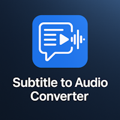

Welcome to AspeedSoftware
Innovative software solutions and DIY robotics projects by Aleksey Nikitenko
Software engineer with 13 years of experience in automation testing and software development.
Featured Projects

RoboArm
A 3D printed robotic arm controlled via keyboard. DIY kit includes Python application, STL files, and detailed instructions.
Arduino
Python
3D Printing
Learn More

TTML to Audio
Transform subtitle files into natural-sounding audio with intelligent timing and pronunciation control. Perfect for accessibility and content creation.
Text-to-Speech
Audio Processing
Learn More
About Me
13 years of experience in web and desktop application development and testing, specializing in .NET technologies and test automation.
Gdańsk, Poland
Software Engineer at EPAM Systems
donaspeed@gmail.com